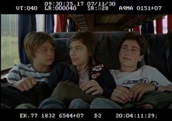

Responder a este comentário
Primeiro corte
por Giba Assis Brasil em 19 de maio de 2008Os saamis vivem na Lapônia, a região mais desolada da Europa, abrangendo uma parte do norte da Rússia, da Noruega e da Finlândia, e que uma antiga lenda chamou de "terra do Papai Noel". Os saamis de verdade são pastores de renas, e delas tiram leite e carne, além de fazer instrumentos de ossos e chifres. Até cem anos atrás a linguagem deles não tinha versão escrita, mas a sua música, chamada de Joik, é uma das mais antigas do mundo. Cada saami tem o seu próprio Joik, uma melodia que é só dele, que é dada pelos pais na infância. Quando um saami cresce, ele pode recriar o seu Joik, ou dar um Joik de presente para a namorada.
Daniel é um brasileiro de 15 anos vivendo numa pequena vila agrícola à beira do rio Caí. No final do ano ele vai terminar a escola, e precisa decidir se vai para uma cidade maior para continuar estudando ou se escolhe uma profissão para seguir vivendo por ali. Nesse momento tão complicado, ele leva um chute da namorada. E o melhor amigo se dá mal, por culpa dele. E o pai que ele nunca viu reaparece, na forma de uma carta, cheia de fotos e de histórias sobre povos estranhos. O mundo de Daniel, que até então se resumia à mãe, o padrasto, a irmã, os colegas e os vizinhos, da noite pro dia fica povoado de saamis, tailandeses, angolanos, tanatorajas.
Este é um pouco do clima de ANTES QUE O MUNDO ACABE, o longa que a Ana Luiza Azevedo está dirigindo, a partir do livro de mesmo nome do Marcelo Carneiro da Cunha, com roteiro do Paulo Halm e também da Ana, meu e do Jorge Furtado. O filme foi rodado entre 30 de outubro e 2 de dezembro do ano passado mas, por uma série de problemas pessoais meus, só esta semana a gente conseguiu chegar a uma primeira versão da montagem.
Primeiro corte é isso: uma versão completa do filme, com tudo o que foi rodado, na ordem prevista no roteiro, mas ainda com algumas cenas longas demais, quase sem música (na verdade, o Leo Henkin já compôs dois temas, o resto ainda falta), sem acabamento de som e sem algumas trucagens - no caso, o filme vai ter muita informação em tela de computador, principalmente nas cenas que se passam no quarto do protagonista, o adolescente Daniel, interpretado pelo Pedro Tergolina. Por enquanto, o que importa é ver tudo o que foi filmado, as ações e diálogos completos, até pra poder decidir o que é fundamental ou não para construir essa história que nós queremos contar.
O primeiro corte do ANTES QUE O MUNDO ACABE ficou grande, como normalmente acontece: as 139 cenas montadas somaram 120 minutos e 5 segundos, num total de 1064 planos. Apesar dos mais de 5 meses desde o final das filmagens, foram 53 dias efetivos de montagem, ou pouco mais de 270 horas.
Agora, vamos parar de mexer no filme por alguns dias, revê-lo várias vezes e definir como vai ser feito o segundo corte. Este certamente vai estar mais próximo da versão final, mas é bem provável que ainda sejam necessários um terceiro, um quarto, quem sabe até um quinto corte antes que a montagem acabe.

O trio central de ANTES QUE O MUNDO ACABE: Daniel (Pedro Tergolina), Mim (Bianca Menti) e Lucas (Eduardo Cardoso), em cena filmada dia 30 de novembro, às 9h30 da manhã.
**********
TEM MAIS:
Artigo da Wikipédia (em inglês) sobre os saamis.
O livro "Antes que o mundo acabe" recebeu o selo "Altamente Recomendável" da Fundação Brasileira do Livro Infanto-Juvenil.
Fernando Meirelles fala sobre o primeiro corte de Blindness, e também sobre os cortes seguintes.